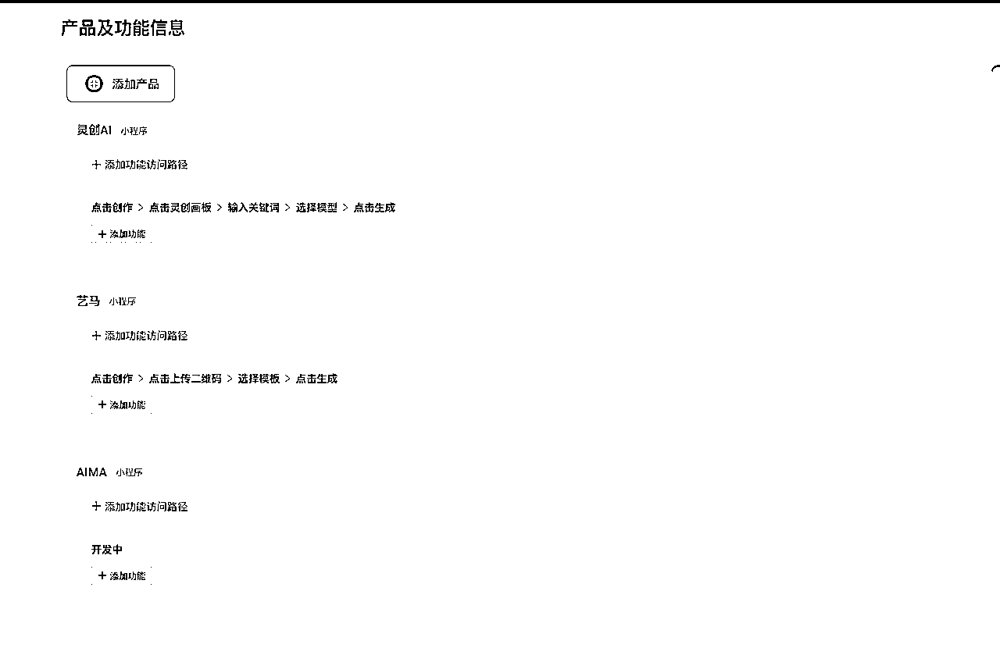

来源：https://krn426yw69.feishu.cn/docx/KwbWdRMaho1n2QxHQhPcXh1An7d
大家好，我是灵创AI的创始人墨文。
目前灵创AI已通过算法主体审核。正在申请算法备案。
分享一些算法备案的相关内容让大家对其有更多的了解。
微信小程序在选择类目要求必须添加AI绘画，灵创AI也在不久前开始申请算法备案。很后悔没有提前准备。
据多方了解备案的时间为：
主体备案周期：7个工作日一审核 （确定是大概7个工作日，我是在第6个工作日审核通过的）
算法备案周期：30个工作日一批次审核 （未知）
应用备案周期：一到两个月（未知）
整体周期在3-6个月左右（未知）
如果有打算做AI相关产品的圈友需要抓紧了。
不过也不用特别慌张，微信小程序目前是要求提交审批中的系统截图（截图中包含完整的主体名称、算法名称等信息）即可。所以，你只需要主体备案成功，就不影响小程序的审核。

官网及其他相关内容
算法备案官网：
https://beian.cac.gov.cn/#/home
关于算法备案（这篇应该对你有用）
https://mp.weixin.qq.com/s/mnkwzOyo3uauPpBskQaK8Q
算法之律 —— 互联网信息服务算法备案详解丨人工智能丨德恒上海
https://mp.weixin.qq.com/s/K9zsub66pFbhXMMH9bxXIw
友情提示：
1.算法安全责任人工作证明让传工作证。如果你没有工作证的话，企微认证钉钉认证飞书认证都可以。
2.算法负责人的手机要保持畅通！保持畅通！保持畅通！ 因为联系不上被拒，如果被拒也可以打电话联系备案官方说明情况，可以不再等7个工作日。
未来有关于算法备案更多的消息和遇到的坑，会持续更新。
在这也附上官方提供的公司主体备案和算法备案需要需要准备的材料模板，供大家提前了解。